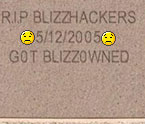

04 - Dark Ages
Dark Ages of Blizzhackers.com
As I’ve never been here in beginnings. Let me just shortly summarize it. Servers went on development, Team Python was only public server for a long time, everybody has been fixing, coding and creating database (AFAIK the most completed DB was done by Hav0k team. Other teams derived from Team Python server went underground (WOWD and others), some tried to continue (WSD) but with the retail release of WOW, they stopped, since there was a problem with SRP6 coding (don’t ask me technical questions). Last Team Python (WSD was for 0.11.0, 1.2.1 release was fake that was never functional and freezes on connect) and finally WOWEmu arises… in the begining, nobody wanted to believe that russian author named WAD really sells his own creation (with stolen code from Stormcraft and other… is it said it is based on RunUO server (this hasn’t been proved) but WAD himself says that WoWEmu was written on c++ and was based on his own DAOC and EQ emus.) and his callbacks were easily removed, so others can play on emu.
Nomad answered question about so-called WOWEmu source
“Septimus src”… Once that guy hacked my forum and wrote me PM from one of developers accounts to send him RunWoW source.. I’ve send him RunUO sources, decompiled with Reflector :). And the next day he posted it on Blizzhackers
That is the root of some rumors that WoWEmu is built on RunUO core, etc.
WAD really toughened his protection, and last versions taken weeks to get and crack. Luckily he gave up development and handed out his source to MarsWOW (or something like that) guys from china. Their today’s status is unknown. While WOWemu was alive, nobody wanted to work on another emus and only repacks were made.
With all these emulators and pirated wow clients, there was big risk of being spotted by Blizzard, and exactly that happened. Blizzard forced the site owner to close down forum… it was reopened at http://www.edgeofnowhere.cc but it misses WOWEmulation forums and talking about WOWEmus is prohibited. But nothing can stop real blizzhacker from having forum  Kronos started his own WOWhackers, but his hoster (Renee) failed to keep up with high bandwith needs, so Kronos have a deal with Ashel. Ashel provided hosting and probably felt that he needs more money and fame, so put up some ads, removed admin rights from Kronos and his mods, and finally he cracked some passwords of important people. Shit happens, so there were two blizzhackers for a time… blizzhackers.us and blizzhackers.biz. Last few weeks .us had some problem with hosting, but it’s fixed and there are two Blizzhackers once more again. So… Bloody runs .us and Dameon (man who tried to pick up Ludmilla) runs .ws Blizzhackers.ws is the flameable place, be careful when going there
Kronos started his own WOWhackers, but his hoster (Renee) failed to keep up with high bandwith needs, so Kronos have a deal with Ashel. Ashel provided hosting and probably felt that he needs more money and fame, so put up some ads, removed admin rights from Kronos and his mods, and finally he cracked some passwords of important people. Shit happens, so there were two blizzhackers for a time… blizzhackers.us and blizzhackers.biz. Last few weeks .us had some problem with hosting, but it’s fixed and there are two Blizzhackers once more again. So… Bloody runs .us and Dameon (man who tried to pick up Ludmilla) runs .ws Blizzhackers.ws is the flameable place, be careful when going there 

Translation of FAQ from http://www.wowemu.net
Hot questions:
Q: Was WoWEmu project closed because of Blizzard?
A: No. I’ve never had any problems with them.Q: Why was WoWEmu project closed?
A: At the beginning, I worked because it was interesting, later, when the game became deeply studied, interest has gone and I worked for money, many people worked against me, so I didn’t receive money, and they reached their goal. Now I don’t have any reasons to continue to work on the project.Q: Who we have to thank for the end of project?
A: Everyone who were around blizzhackers/wowhackers. Crackers, hackers, liqueurs, pilferers and all pitiful beggars who doesn’t deserve to be named here.Q: Can I obtain the latest version of WoWEmu?
A: Search for it on the internet, for example on www.google.com, you’ll probably find the cracked version, use that.Q: Can I obtain official WoWEmu? I mean the paid one.
A: No, no.Q: Why feature [blabla] doesn’t work in WoWEmu?
A: Sorry, didn’t have time to make it working.General questions:
Q: What was WoWEmu written in?
A: C++. VS 6.0sp5Q: Does it contain code from other emulators?
A: No.Q: [blablabla] says it contained some.
A: [blablabla] doesn’t know what he’s saying.Q: And how about another GPL code?
A: The only GPL code is contained WoWEmu is few functions from fdblibm from js by Sun Microsystems, even those are greatly modified.Q: I like scripting language [blablabla], but WoWEmu used TCL, why?
A: Why not? Someday I’ll look into [blablabla] and I’ll consider if it’s worthy.Q: what do you think about asprotect now?
A: its problem is obvious - it is written on Delphi, and this does not give to it the possibility of using VXD. Protection without use ring0 is already old.Q: Who wrote WoWEmu together with you?
A: I’ve written core on my own. There were helpers who wrote the scripts and helpers who gathered info from Blizzard’s servers, those were so-called WoWEmu team. List can be found in the emulator, in file doc/ThanksTo.txtQ: I’ve heard that there were people, who saw and wrote the code for WoWEmu.
A: Yes, at the very beginning there were the two men, namely Glorfindel and quetzal. quetzal didn’t write a line, Glorfindel wrote few functions used in spell system. Thanks to them.Q: How many WoWEmu servers are used in the world?
A: In the middle of 2005 - I got around 25000 of them logged. I think that the total quantity of people who played on WoWEmu is about half million. I don’t know about recent numbers as I’m not following it anymore.Technical questions:
Q: How to do….?
A: The project is closed; there will be no answers to technical questions.Personal questions:
Q: What do you think about Blizzard?
A: I respect enormous work which they made with WoW, their designers and programmers. I respect some of their strategic solutions. I do not understand, probably as many, their relation to emulation, emulators made them free advertisement. I’ve never had nor has official or unofficial contacts to them.Q: Did you have any experience with emulation of game-servers before WOWEmu?
A: UO, EQ, DAoC, MU.Q: What does interest you now?
A: GunZ and La2 from emulating.Q: Do you still being interested in WOW?
A: Not really, my name is too deformed in the community around the emulation of this game.Q: What MMO game is the best?
A: DAoC. I know it from reverse-engineering point of view.Q: Can you please write the emulator for [blablabla]?
A: If you want me to, there is no problem, if the game is popular and interesting, if you want, there are no problems, if game popular and interesting, describe it to me for sure.Q: I have a question, where should I write it?
A: wad@inbox.lvAnswers by wad. 23/04/2006, Reprinting is forbidden